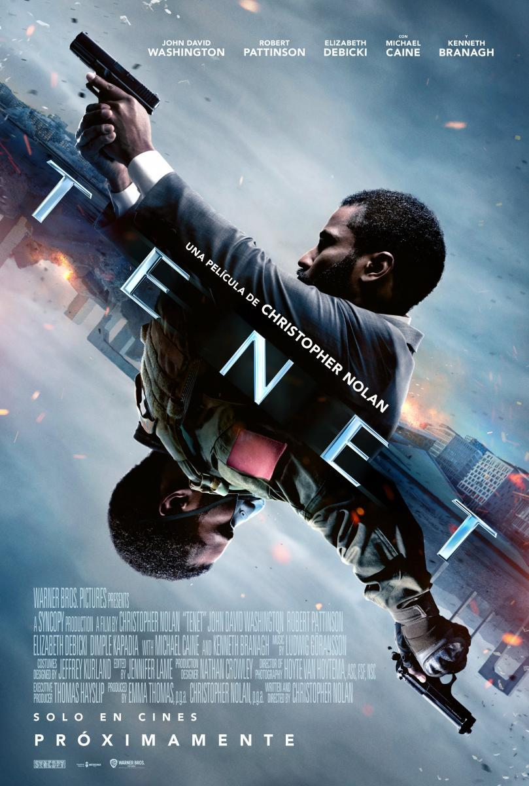

Tenet:
Un agente secreto emprende una misión que se desarrolla más allá del tiempo real, para intentar prevenir una Tercera Guerra Mundial.
Descripción:
Un agente anónimo de la CIA, participa en una operación SWAT encubierta, rescatando a un espía expuesto y capturando un extraño artefacto. El Protagonista es capturado y torturado antes de consumir una píldora de cianuro. Más tarde se despierta y se entera de que la píldora era falsa, el artefacto fue capturado y que la misión de Kiev era una prueba.